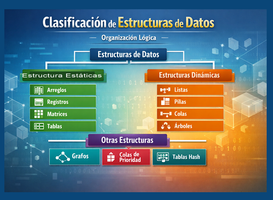
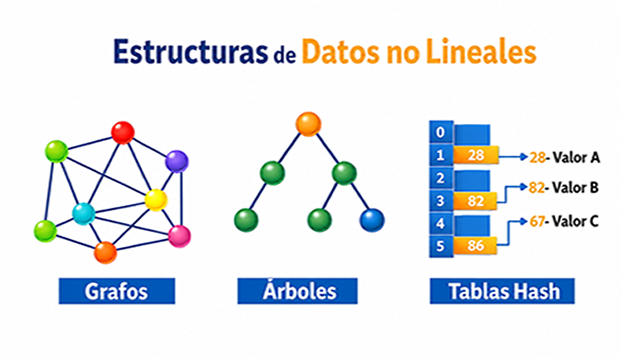
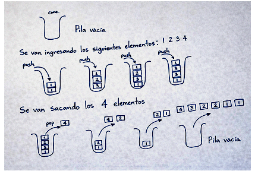

Por lo que las estructuras de datos funcionan como medios para almacenar y organizar la información dentro de un programa, permitiendo guardar datos durante su ejecución y recuperarlos cuando se necesitan. Cada una organiza los elementos de manera distinta, lo que influye en su comportamiento y operaciones, por lo que es fundamental que el programador elija la estructura adecuada para cada funcionalidad, logrando así un desarrollo más eficiente y ordenado.
La clasificación de las estructuras de datos se puede abordar desde diferentes criterios técnicos, dependiendo de su forma de organización, representación en memoria y comportamiento. A continuación te la explico de manera clara y estructurada::
Organización lógica
- Estructuras de datos lineales: Son aquellas que organizan los elementos de información en secuencia uno detrás de otro, aparentando que se forma un segmento de recta (parecido a un arreglo). Este tipo de estructuras son:
- Existe un único camino de recorrido
- Cada elemento (excepto extremos) tiene un predecesor y un sucesor
- Arreglos (arrays)
- Listas enlazadas
- Pilas (LIFO)
- Colas (FIFO)
- Estructuras de datos no lineales: Los elementos no siguen una secuencia única, sino que pueden tener múltiples relaciones:
- Permiten jerarquías o conexiones complejas
- No hay un único recorrido lineal
- Árboles (binarios, AVL, B)
- Grafos
Características:
Ejemplos
Características
Ejemplos

- Estructuras de datos no lineales: Los elementos no siguen una secuencia única, sino que pueden tener múltiples relaciones
- Permiten jerarquías o conexiones complejas
- No hay un único recorrido lineal
- Árboles (binarios, AVL, B)
- Grafos
Características:
Ejemplos

Ya que la forma en que opera una pila implica que el orden de los elementos se invierte al momento de retirarlos respecto a como fueron insertados, se le identifica como una estructura LIFO (Last In, First Out), donde el último elemento en ingresar es el primero en salir. Esta propiedad se puede apreciar de manera visual en la imagen siguiente.
